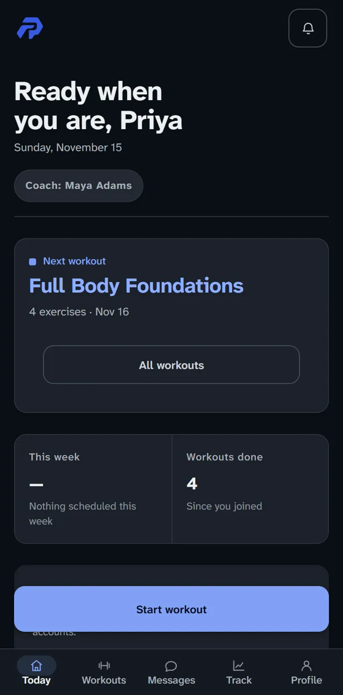
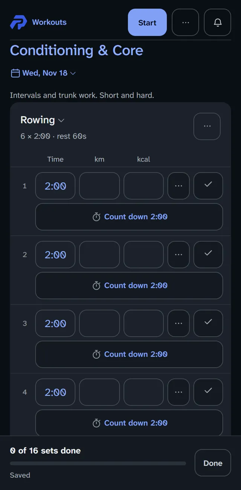
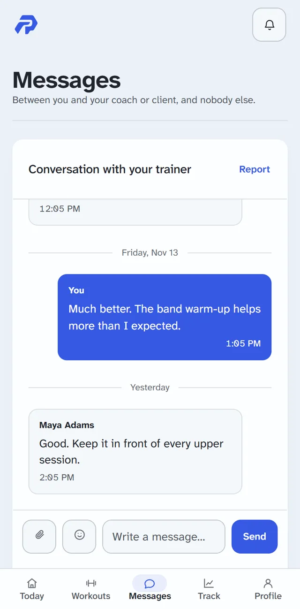
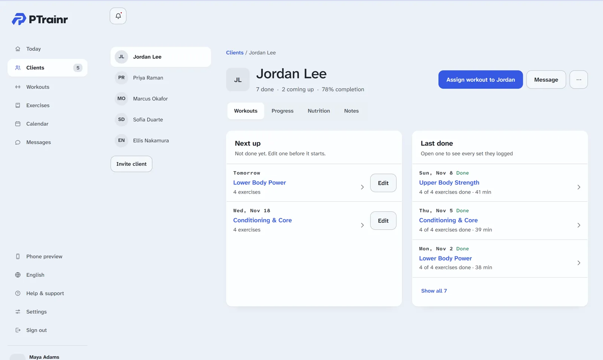
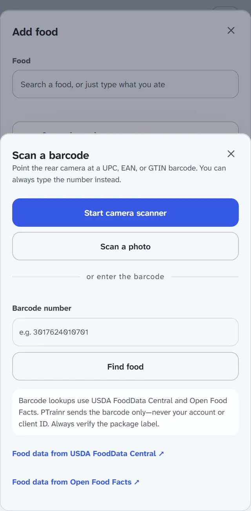
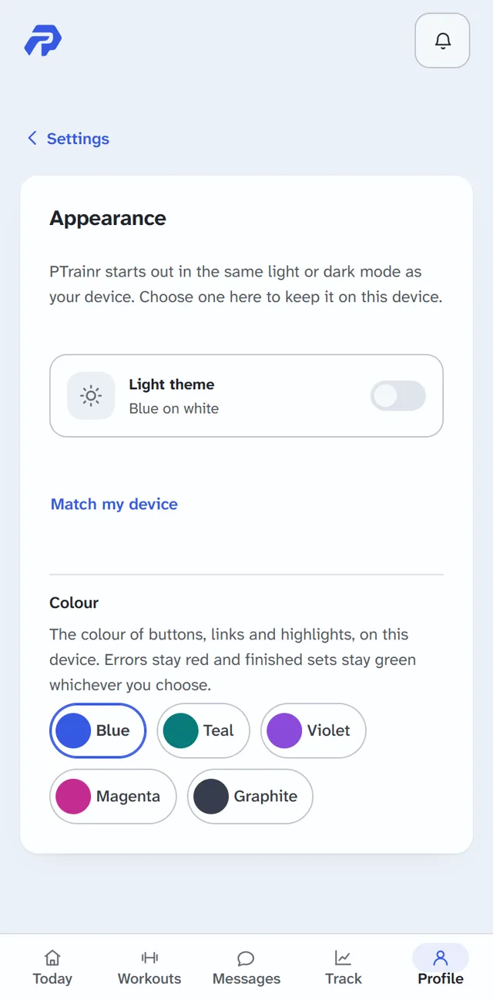
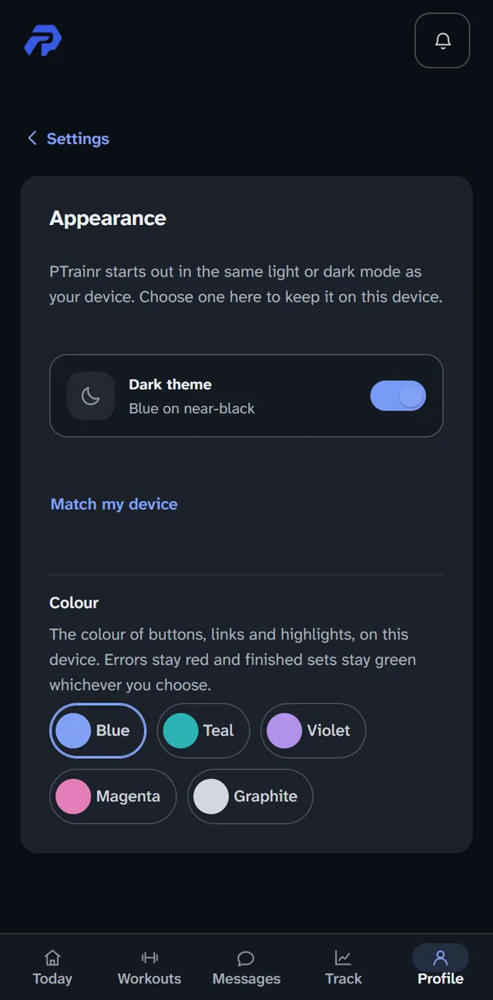

Case study · 2026, ongoing
PTrainr
A training app for coaches and the people they train. The coach writes a workout once; the client logs it set by set from a phone. Three apps, web, Android and iOS, held to the same screens by checks that fail when they drift.








Every figure is the real app signed in to a seeded demo account. The people and their numbers are invented.
01
The problem is a sheet of paper
A coach's plan is a list of exercises with targets. A client's week is the same list with what actually happened written beside it. PTrainr keeps the two apart on purpose: what the coach prescribed is set in blue, and what the client did is set in graphite. That one rule decides most of the interface.
The logger is the screen that matters, because it is used one-handed and out of breath. Targets arrive filled in. A tick logs the set as written, the footer never moves, every set saves as it is ticked, and with no signal the sets wait on the phone and go up in order later.


02
Chosen from three worlds, not generated
By October the app worked and looked like every other dashboard. So it was photographed whole, 990 screenshots across eight sizes, and audited. Seven possible worlds came out of the audience's own surroundings; three were drawn as working mock-ups, a race bib, a departure board and a paper training log, and the log was picked.
It brought a pale desk, white sheets lifted off it, and Atkinson Hyperlegible, a typeface made for low-vision readers. Every direction that was passed on is kept, with the reason, beside the one that was built.

03
Three apps that are not allowed to differ
The website is the source of truth. The Android app is Kotlin and Compose, the iOS app is SwiftUI, and both copy the web's phone layout screen for screen. A check reads all three codebases and fails when a tab, a row, a word or the brand colour differs. A scoreboard grades every screen on each platform, and a new page on one shows up as a gap on the others until it is built.
The web app is plain JavaScript: no framework and no build step. The server is Node's own HTTP module over PostgreSQL. Sign-in, two-factor codes, passkeys and the Google, Microsoft and Apple flows are written by hand, without an auth library.
- Screens graded on each platform
- 63
- LanguagesArabic and Farsi run right to left
- 19
- Interface strings, in every language
- 1,976
- Automated checksplus 23 unit suites
- 64
- Database migrations
- 53
- Runtime dependencies on the server
- 2
04
Private by default
Meals, measurements and notes belong to the client. A coach sees a category only while the client shares it, per coach, and sharing can stop at any time. The staff dashboard sees accounts and never a workout, a meal or a message. PTrainr records numbers and never calls one high or low: it is a coaching tool, not a medical one.



